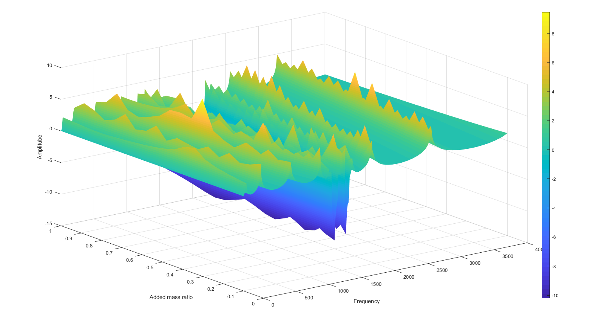
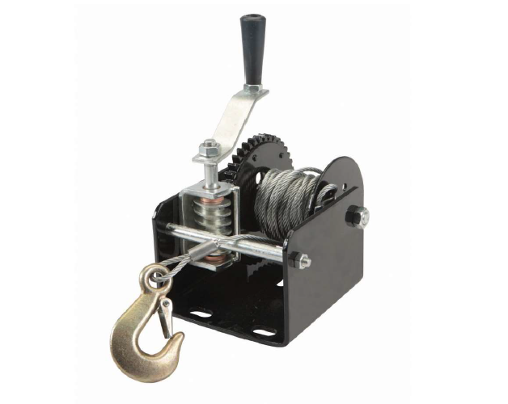

Academic Projects
Following are some of the academic projects that I have made and currently doing

This a project that I am currently undertaking to merge the mechanical and electromechanical bandgaps in locally resonant metamaterials.
This project is developed as final project to evalute the course Smart structures and devices. Please click on thumbnail to take a look at the project report.

It is a voluntery project that was done to biomimic a jelly fish and create a robot with a
same kind of movement behaviour. Please click on thumbnail to take a look.

Above is a ambient project that I had performed in a team for a course that I took in my bachelor
degree. It's primary goal was to protect the toddlers that under go in the domestic enviroment. We had used a
raspberry pi and some sensors such as Zwave 4 in 1, Door sensors, etc. Please click the thumbanail to visit the
project site.

This is a academic project which I participated in University of Arkansas. Aim of this project was
to identify the vulnerable positions in a commercially used trailer for its failure. After modeling the device, FEA
was used to verify the results obtain by hand calculation. Please click the thumbnail to take a look in the project.

It is a redesign engineering academic project I participated in University of Arkansa (USA). A gearbox of a honda
civic was redesign to have a higher torque at given rpm. Please click the thumbnail to take a look at the project.